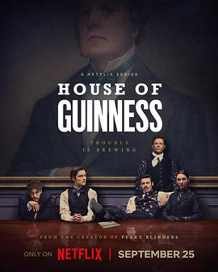

7.5
健力士王朝
House of Guinness
2025
英国
评分 7.5
导演:
汤姆·森兰 / 穆尼亚·阿克
演员:
安东尼·鲍伊 / 路易斯·帕特里奇 / 艾米莉·费尔恩 / 费昂·奥谢 / 詹姆斯·诺顿 / 妮娅姆·麦柯马克 / 谢默斯·奥哈拉
类型:
传记,剧情,历史
剧情简介
故事从19世纪的都柏林展开，空气里始终弥漫着麦芽的味道。吉尼斯啤酒厂的巨大铜罐在晨雾中隐隐作响，仿佛象征着家族的命运齿轮正在缓缓转动。本杰明·吉尼斯去世后，他留下的遗嘱成为推动一切的关键力量，为看似体面的家族平静掀起涌动的暗潮。四个子女站在继承人角色的不同位置上，性格鲜明，也在各自的轨迹上奔向未知。长子亚瑟沉稳谨慎，对家族荣耀怀着近乎执念的忠诚；爱德华更愿意在新兴的纽约寻找突破，雄心却常在现实压力下显露裂缝；安妮在男性主导的商业世界里保持敏锐洞察，她想证明女性也能撑起家族未来；而最年轻的本则在父亲光芒下感到压迫，渴望走出既定轨道，却又被家族责任牵扯。随着遗嘱内容逐渐揭开，他们的关系被推向复杂的交汇点。继承的不仅是一家啤酒厂，更是一段负重的历史与无法逃避的家族牵连。都柏林与纽约之间的时局变迁、市场竞争和社会阶层冲突不断为剧情增添张力，每一次选择都可能把他们带往截然不同的命运。本剧以细腻的人物刻画和鲜明的时代氛围构筑出一幅恢弘的家族史。啤酒厂蒸汽升腾的声响、都会街区的喧嚣、贵族社交场的微妙暗斗，都让故事的每一步都充满鲜活质感。它不仅描绘商业帝国的崛起，也展示家族成员在情感、责任与欲望之间的拉扯与成长，让观众在沉浸时代风貌的同时，感受到人物真实又强烈的情绪流动。